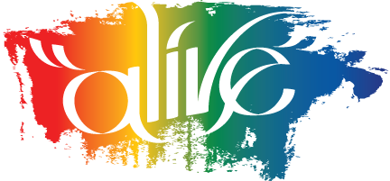
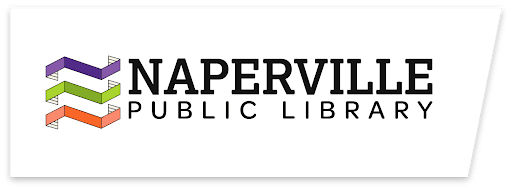
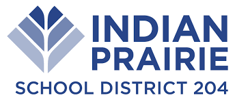

Maya Sharma
Co-Founder
A FlyingMinds program
We're a student-led team based in the Naperville area, bringing space science and AI into places where students can explore them together.
AstroThink teaches students about space science and artificial intelligence through workshops, projects, and online activities. Students learn about topics such as rocket flight, parachutes, and how computers learn from data.
We develop lessons and activities for schools, libraries, and community programs, alongside resources students can explore online. Our programs now also include Python, healthcare, and career exploration for older students.
See our programsCo-Founder

Co-Founder
Founded by Maya Sharma and Anwita Vemana.

A community partner and host for AstroThink's student-led space and AI program.

Our Career Pathways series has brought students and guest speakers together at the 95th Street Library.

AstroThink's school programs have included hands-on space and AI sessions at Welch Elementary.
Our programs connect classroom ideas to people and projects. Students have explored healthcare with Aurora Public Library, asked career questions in a library speaker series, and taken their first steps with Python and neural networks online.
Space science guests have included astrobiologist Will Wallentine, whose work explores life in extreme environments and what it can tell us about other worlds.
Meet everyone on the teamEmail us about student programs, school visits, or community partnerships.